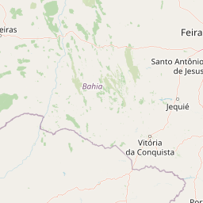
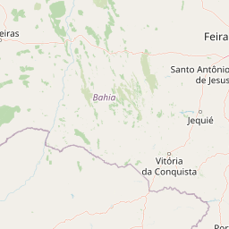

Viaje conosco
Uma equipe de jornalistas da Record TV percorreu a rodovia Transamazônica e registrou as histórias de um Brasil quase desconhecido.
.png) 
.png)
.png)
.png)
.png)
.png)
.png)
.png)
Uma equipe de jornalistas da Record TV percorreu a rodovia Transamazônica e registrou as histórias de um Brasil quase desconhecido.
A Transamazônica começa oficialmente na cidade de Cabedelo, na Paraíba. Só que a rodovia iniciada nos anos 1970 nasceu no estado do Pará. Partimos de Marabá rumo a oeste. Venha conosco!
Encontramos em nossa expedição mulheres que convivem diariamente com ameaças de criminosos.
LEIA O ARTIGO "MARCADAS PARA MORRER"
Moradores tiveram que deixar suas casas às pressas para a construção da usina.
LEIA O ARTIGO "EXPROPRIADOS DE TUCURUÍ"
De domingo a domingo, a rotina de seu Antônio é encher e esvaziar fornos com restos de madeira.
LEIA O ARTIGO "O CARVOEIRO"
Na esperança de sustentar a família, um homem foi transformado em escravo.
LEIA O ARTIGO "3 MESES DE ESCRAVIDÃO"
Silvério perdeu o irmão assassinado e diz que não sai da terra onde trabalha de jeito nenhum.
LEIA O ARTIGO "DISPUTA PELA TERRA"
Segundo o DNIT (Departamento Nacional de Infraestrutura de Transportes), dos 4.159 km de extensão da Transamazônica, pelo menos 1.753 km são de terra.
Chegamos ao majestoso rio Xingu. Para seguirmos em nossa expedição pela Transamazônica, é preciso encarar uma balsa.
Eles chegaram na Transamazônica atraídos por um sonho, mas a realidade foi bem diferente.
LEIA O ARTIGO "OS PRIMEIROS COLONOS"
Para ele, a devastação criminosa da floresta é um meio de vida.
LEIA O ARTIGO "PROFISSÃO: SERRADOR"
Ela é herdeira de pioneiros da Transamazônica e hoje leva o fruto da floresta para o mundo.
LEIA O ARTIGO "A RAINHA DO CACAU"
A longa rodovia Transamazônica esconde muitas armadilhas que surpreendem até os motoristas mais experientes.
A queda d´água encanta moradores e turistas que procuram seu banho gelado para escapar um pouco do calor na Transamazônica.
Garimpeiros sonham com a riqueza, mas encaram uma rotina perigosa e de muito trabalho.
LEIA O ARTIGO "A FEBRE DO OURO"
Em uma estrada deserta, os jornalistas da Record TV têm uma surpresa desagradável.
Travessias feitas com troncos estão por todo o caminho e sem elas seria impossível seguir viagem pela rodovia Transamazônica.
Um homem que caminha solitário pela estrada chama a nossa atenção.
É difícil escapar ileso após milhares de quilômetros na estrada. Um problema mecânico atrasa nossa expedição.
As terras dos índios Tenharim ficam às margens deste ponto da rodovia. Eles viviam isolados até a chegada da Transamazônica.
Chegamos a um dos afluentes do rio Amazonas. Para seguir pela rodovia, novamente embarcamos em uma balsa.
Moradores e indígenas tentam superar um passado recente de conflitos nesta cidade do Amazonas.
LEIA O ARTIGO "TENSÃO EM HUMAITÁ"
A Transamazônica teve as obras paralisadas em Lábrea (AM), sendo que o plano inicial era que chegasse até Benjamin Constant (AM), na fronteira com o Peru, a 660 km de distância. Este é o ponto final da nossa expedição.